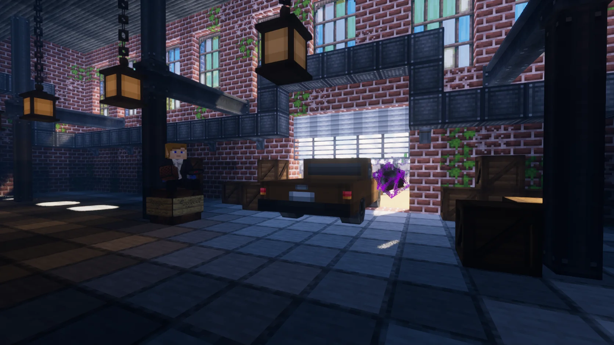

Огнестрельное оружие
Пистолеты, автоматы, дробовики, пулемёты, прицелы и десятки типов патронов.
MINECRAFT 1.20.1 · FORGE
Выживание, которое объединяет
Твой Minecraft. По ту сторону привычного.
Стройте уютное убежище, исследуйте заброшенные города или отправляйтесь на вылазку с друзьями. Здесь найдётся дело и новичкам, и опытным выжившим.

ТВОЙ СПОСОБ ИГРАТЬ
 01 / ОБУСТРОЙСЯ
01 / ОБУСТРОЙСЯЗащищённая база, запасы и механизмы. Начни с малого и построй место, куда хочется возвращаться.
Гайды по выживанию → 02 / ИССЛЕДУЙ
02 / ИССЛЕДУЙЗаброшенные города, бункеры и опасные ночи. Собирай снаряжение и выбирай свой маршрут.
Познакомиться с миром → 03 / ОБЪЕДИНЯЙСЯ
03 / ОБЪЕДИНЯЙСЯТорговцы, задания и общая база. Исследовать и переживать трудности интереснее вместе.
NPC и задания →МИР ПОСЛЕ КАТАСТРОФЫ
HORDE превращает Minecraft Java 1.20.1 в мир зомби-апокалипсиса. Исследуйте разрушенные города, больницы, лаборатории и военные объекты, добывайте патроны и лекарства, стройте защищённую базу и держитесь вместе во время ночной орды.
ПЕРВЫЙ ЗАПУСК
Один EXE для Windows. Java, Forge и моды отдельно устанавливать не нужно.
Выберите PNG-скин при желании и запустите игру без лицензии или через официальный аккаунт.
Используйте /register пароль пароль. При следующих входах — /login пароль.
HORDE LAUNCHER
Ник, память, скин и обновления в одном окне. Понятная навигация, большая кнопка запуска и онлайн сервера. При первом входе зарегистрируйтесь в игре.
БОЛЬШЕ, ЧЕМ ВЫЖИВАНИЕ
Пистолеты, автоматы, дробовики, пулемёты, прицелы и десятки типов патронов.
Военные, заражённые, учёные и редкие опасные виды зомби с разным поведением.
Развалины, школы, заводы, бункеры, лаборатории и лутаемые останки выживших.
Закрепляйте территорию, объединяйтесь с игроками и защищайте накопленные ресурсы.
Торговцы, проводники, квестовые NPC и инженерные постройки помогают выжившим держаться дольше.
PvP включён во всех игровых мирах HORDE. Безопасной зоной остаётся /spawn.
Слышимость зависит от расстояния. Договаривайтесь тихо — заражённые рядом.
Лаунчер сам проверяет сборку, скачивает новые моды и удаляет устаревшие файлы.
ОБНОВЛЕНИЕ · 9 СЕНТЯБРЯ 2026
Сборка 5.0.47: обновлённый баланс оружия и лута, защита PvP и новый мод Zombie Island. Подробности и порядок обновления — в журнале обновлений.
Число игроков теперь видно прямо в лаунчере. Онлайн обновляется каждую минуту.
Открыть лаунчер → МИР · 5.0.46Удлинённый день, естественный закат и новый облик красной луны.
Что изменилось → ГАЙД · ПРИВАТКак занять чанки в FTB Chunks и объединиться с друзьями через FTB Teams.
Разобраться с приватом →БЫСТРЫЕ РАЗДЕЛЫ
Скачать HORDE.exe, установить Forge 1.20.1, моды и автообновления без ручной настройки.
Разрушенные города, орды, мутанты, вылазки, базы и survival после катастрофы.
TacZ, Create, CustomNPCs, TacZ NPCs и другие моды HORDE.
Старт, приваты, донат, команды, фракции и советы для первой ночи.
Профиль игрока, скин и возможности личного кабинета.
Патроны, прицелы, рукоятки, приклады, дула и торговец модулями.
Проводник, торговцы, скупщик, союзные защитники и враждебные группы.
Привилегии и условия поддержки сервера HORDE.
АКТУАЛЬНО
Отдельный рынок игроков отключён. Для старта используйте /spawn, гайды, NPC и актуальные команды сервера.
/spawn переносит в безопасную стартовую зону HORDE.
Перед входом нажимайте Проверить в лаунчере, чтобы получить актуальный pack.
Основные правила, донат, кабинет, приваты и команды описаны на сайте.
СКРИНШОТЫ СЕРВЕРА


ЧАСТЫЕ ВОПРОСЫ
HORDE — русский сервер выживания Minecraft с модами про зомби-апокалипсис. Игроки исследуют разрушенные города, добывают оружие, строят базы и переживают атаки орды.
Сервер работает на Minecraft Java Edition 1.20.1 с Forge и предназначен для компьютеров Windows.
Скачайте HORDE.exe с официального сайта проекта. Лаунчер сам установит Minecraft 1.20.1, Forge, моды и русские ресурсы, а затем будет получать обновления автоматически.
В лаунчере появился онлайн сервера, обновлены красная луна и продолжительность дня. Подробности — в журнале обновлений.
Да. На сервере есть оружие, NPC, торговцы, квестовые персонажи и survival-механики зомби-апокалипсиса.
Да, доступ к серверу HORDE и загрузка фирменного лаунчера бесплатны.
Нет. HORDE использует Minecraft Java Edition, Forge и моды, поэтому для игры нужен компьютер под управлением Windows.
ГОТОВЫ ВЫЖИВАТЬ?
Фирменный лаунчер установит Minecraft 1.20.1, Forge, серверную сборку модов и русские ресурсы. Следующие обновления придут автоматически без повторного скачивания EXE.